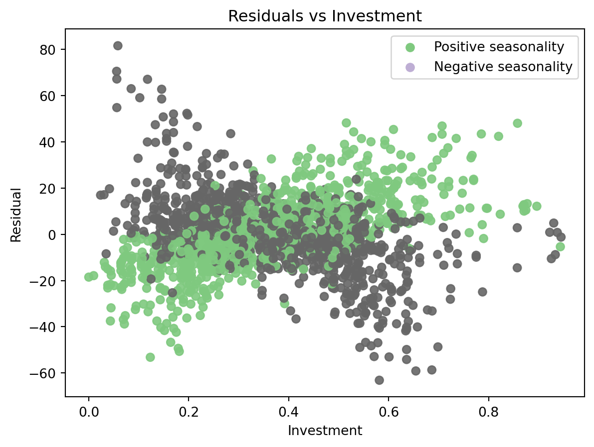

This guide explains how to create effects that use the output of other effects.
In previous examples, we saw how to create a simple custom effect, which applies a simple transformation to the input data. However, the effect’s interface allows us to apply more complex transformations, such as using the output of previous components as input for the current component, or creating a composite effect that wraps an effect and applies some sort of transformation. This example will cover these topics.
Creating a custom effect
The idea here is to create an effect that uses another predicted component to scale the impact of an exogenous variable.
One classic use-case for this would be using seasonality to scale the effect of investment, that might be proportional to it. Marketing investments are a good example of this. We will implement such a composite effect in this section.
Example dataset
The dataset we use is synthetic, and the relation between the exogenous variable and the target is known. However, let’s pretend we don’t know this relation, and analize the data to find some insights that motivate the creation of a custom effect. The dataset has a target variable, which is a time series, and an exogenous variable, which is the investment made for each date.
import numpyroimport numpyro.distributions as distfrom matplotlib import pyplot as pltfrom sktime.split import temporal_train_test_splitfrom sktime.utils.plotting import plot_seriesfrom prophetverse.datasets.synthetic import load_composite_effect_examplenumpyro.enable_x64()y, X = load_composite_effect_example()y_train, y_test, X_train, X_test = temporal_train_test_split(y, X, test_size=365)display(y_train.head())display(X_train.head())
/opt/hostedtoolcache/Python/3.11.13/x64/lib/python3.11/site-packages/tqdm/auto.py:21: TqdmWarning: IProgress not found. Please update jupyter and ipywidgets. See https://ipywidgets.readthedocs.io/en/stable/user_install.html
from .autonotebook import tqdm as notebook_tqdm
The timeseries has a yearly seasonality, and it seems that some oscillations are proportional to the investment. Below, we model the timeseries with a simple linear effect between the investment and the target, and a yearly seasonality based on fourier terms. Then, we will analize the residuals to see if there is any pattern that we can capture with a custom effect.
We can see that some peaks are not captured by the model. Our hypothesis to explain this phenomenon is that the investment has more impact on the target when it is done during the positive seasonality periods. To test this, we plot the residuals of the model against the investment, and color the points based on the seasonality component. We can see that slopes are different for positive and negative seasonality, which indicates that our hypothesis is possibly correct.
/tmp/ipykernel_2903/182972736.py:14: MatplotlibDeprecationWarning: The get_cmap function was deprecated in Matplotlib 3.7 and will be removed in 3.11. Use ``matplotlib.colormaps[name]`` or ``matplotlib.colormaps.get_cmap()`` or ``pyplot.get_cmap()`` instead.
colors = plt.cm.get_cmap("Accent").colors

Creating the composite effect
To model this behaviour with Prophetverse, we will create a custom effect, that scales a new effect by the output of a previous component. The _fit and _transform methods call the inner effect’s methods, and the predict method multiplies the inner effect’s predictions by the seasonality, which is passed as base_effect_name.
from typing import Any, Dict, Listimport jax.numpy as jnpimport pandas as pdfrom prophetverse.effects.base import BaseEffectclass WrapEffectAndScaleByAnother(BaseEffect):"""Wrap an effect and scale it by another effect. Parameters ---------- effect : BaseEffect The effect to wrap. """ _tags = {"requires_X": False, "hierarchical_prophet_compliant": False}def__init__(self, effect: BaseEffect, base_effect_name: str, ):self.effect = effectself.base_effect_name = base_effect_namesuper().__init__()self.clone_tags(effect)def _fit(self, y: pd.DataFrame, X: pd.DataFrame, scale: float=1):"""Initialize the effect."""self.effect.fit(X=X, y=y, scale=scale)def _transform(self, X: pd.DataFrame, fh: pd.Index) -> Dict[str, Any]:"""Prepare input data to be passed to numpyro model."""returnself.effect.transform(X=X, fh=fh)def _predict(self, data: Dict, predicted_effects: Dict[str, jnp.ndarray], *args, **kwargs ) -> jnp.ndarray:"""Apply and return the effect values.""" out =self.effect.predict(data=data, predicted_effects=predicted_effects) base_effect = predicted_effects[self.base_effect_name]return base_effect * out
Instantiating the model with the composite effect
To create the model, we use the model instance we have, and the rshift operator to append the composite effect to the model.
import numpyro.distributions as distfrom prophetverse.engine.optimizer import AdamOptimizercomposite_effect_tuple = ("investment_seasonality", # The effect ID, can be what you want WrapEffectAndScaleByAnother( effect=LinearEffect("multiplicative", prior=dist.HalfNormal(1)), base_effect_name="seasonality", ), exact("investment"),)# We use the rshift operator to append an effect to the modelmodel_composite = model >> composite_effect_tuplemodel_composite.fit(y=y_train, X=X_train)y_pred_composite = model_composite.predict(X=X_train, fh=y_train.index)
/home/runner/work/prophetverse/prophetverse/src/prophetverse/sktime/univariate.py:252: UserWarning: No columns match the regex ^$
self._fit_effects(X, y)
/home/runner/work/prophetverse/prophetverse/src/prophetverse/sktime/univariate.py:252: UserWarning: Columns {'investment'} are already set
self._fit_effects(X, y)
0%| | 0/1 [00:00<?, ?it/s]100%|██████████| 1/1 [00:08<00:00, 8.48s/it, init loss: -6054.6937, avg. loss [1-1]: -6054.6937]100%|██████████| 1/1 [00:08<00:00, 8.48s/it, init loss: -6054.6937, avg. loss [1-1]: -6054.6937]
We can see below how these oscilations are captured by the model correctly when adding this joint effect.